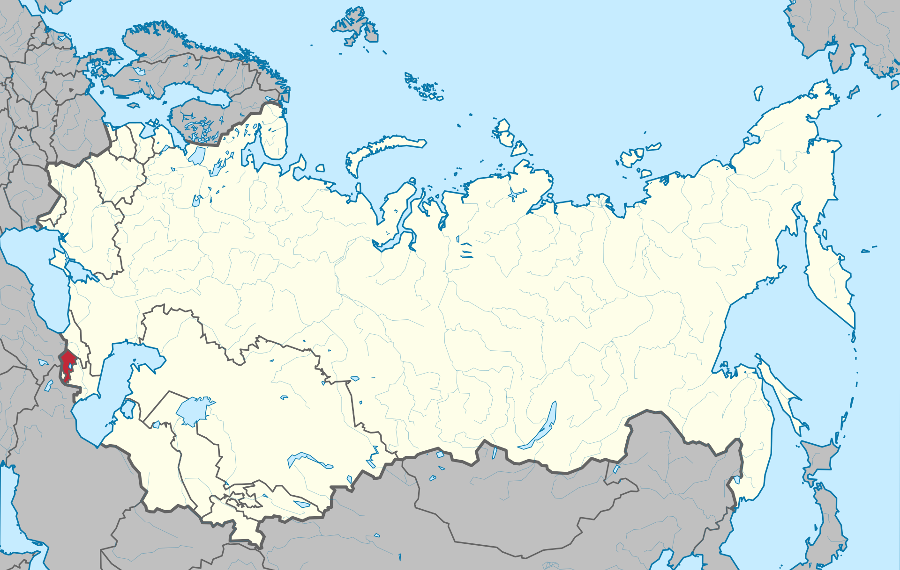

АССР
В 1922—1936 гг. официальное название республики звучало по-русски как «Социалистическая Советская Республика Армения», «Социалистическая Советская Республика Армении», c 1936 года согласно Конституции СССР «Армянская Советская Социалистическая Республика», а по-армянски «Айастани Социалистакан Хорэрдайин Анрапетутюн» (арм. Հայաստանի Սոցիալիստական Խորհրդային Հանրապետություն). Затем название было изменено на «Армянская ССР», соответственно в армянском названии форма «айастани» («Армении») была заменена на прилагательное «айкакан» («армянская»), кроме того, слова «советский» и «социалистический» поменяли местами (арм. Հայկական Խորհրդային Սոցիալիստական Հանրապետություն). Официальное название Армянской ССР на русском языке далее не менялось, однако армянское название изменилось ещё дважды, вместе с официально изменяемым переводом на армянский язык терминов «советский» и «республика». В 1940 году в качестве перевода обоих терминов вместо армянских калек были взяты прямые заимствования, и название было изменено на «Айкакан Советакан Социалистакан Республика» (арм. Հայկական Սովետական Սոցիալիստական Ռեսպուբլիկա). В 1966 году был восстановлен прежний термин для «республики» (для «советский» остался русизм), и в окончательной редакции название республики выглядело как «Айкакан Советакан Социалистакан Анрапетутюн» (арм. Հայկական Սովետական Սոցիալիստական Հանրապետություն).
Карта АССР c 29 ноября 1920 года — 23 августа 1990 года
[ОБРАТНО НА ГЛАВНУЮ] [ОБРАТНО К РЕСПУБЛИКАМ]